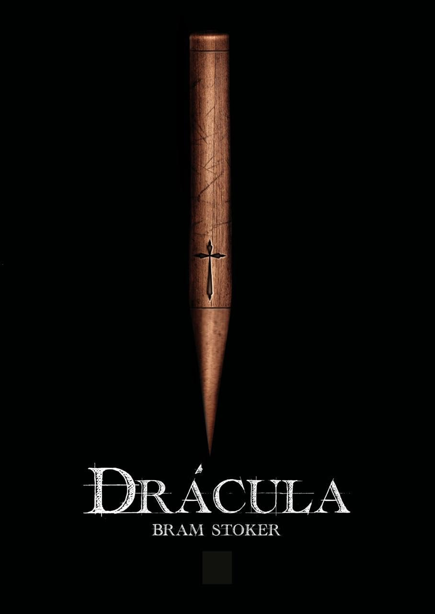
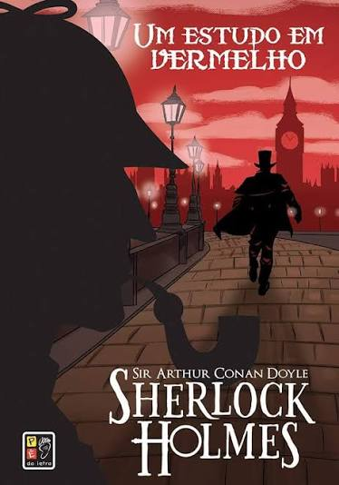
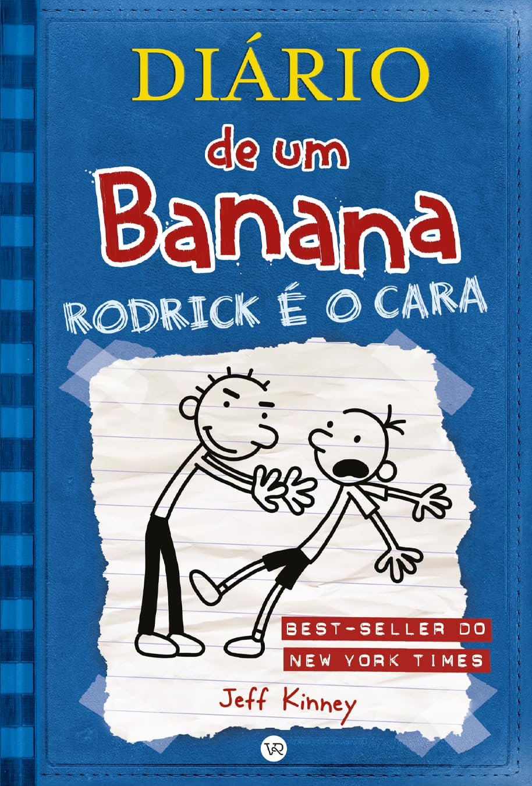

☦︎Meu nome é Natan☦︎
Seja bem vindo ao meu website pessoal 👻
Desenvolvedor nas horas vagas e alternativo em tempo integral. Futuro engenheiro de redstone no Minecraft.
Fale comigo🦇 Sobre mim 🦇
Tenho 19 anos e atualmente estou cursando Análise e Desenvolvimento de Sistemas (ADS). Eu gosto de jogar, assistir anime de vez em quando e eu pratico jiu-jitsu. Muito raramente eu leio, e gostaria de transformar novamente em um hábito. Alguns livros que li nesse ano de 2026 foram Drácula, O Retrato de Dorian Gray, Guerra dos Mundos e Sherlock Holmes. Eu também gosto de ler textos sobre mitologia, como a grega e a celta.
Eu sou bem eclético no meu gosto musical, mas ouço principalmente darkwave, pós-punk e rock gótico. Curto ficar descobrindo artistas menos conhecidos, e recomendo muito que escute Lost Lenore, Anum Preto e Plastique Noir.
Recentemente eu terminei de jogar Blasphemous 2 e adorei, uma ótima continuação do primeiro. Tenho jogado The Binding of Isaac (o Rebirth), Cult of The Lamb e Zombie Night Terror(esse quase ninguém conhece, mas eu gosto).
De vez em quando eu gosto de fazer reviews dos animes que assisto no EyeCatch, um aplicativo criado por um dos meus grandes amigos. Meu user por lá é @neo. Alguns dos meus animes favoritos que eu já fiz review incluem Vinland Saga, JoJo e Hajime no Ippo.




🪶 Purgatório de Prata 🪶
Em 2023, eu comecei a compor poemas curtos buscando me expressar emocionalmente. Pouco tempo depois, me divertindo com esse processo, passei a desejar escrever não somente o que eu pensava ou sentia, mas sim ideias, conceitos e pensamentos que eu gostaria de explorar em versos.
Recentemente, eu tenho me divertido bastante compondo poesias de estética mais melancólica e gótica, seja na estética ou no gênero. Por isso, eu criei o Purgatório de Prata, que é uma coletânea de alguns desses poemas mais puxados pra essa temática. Eu vou atualizar ele de vez em quando, então para quem quiser ler, eu deixo disponível o PDF atual aqui.